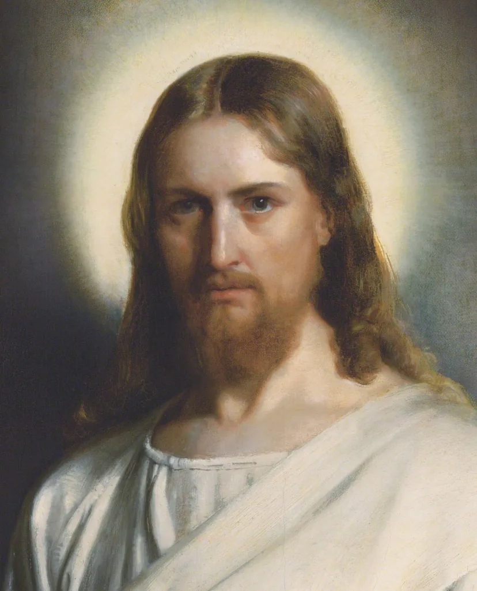
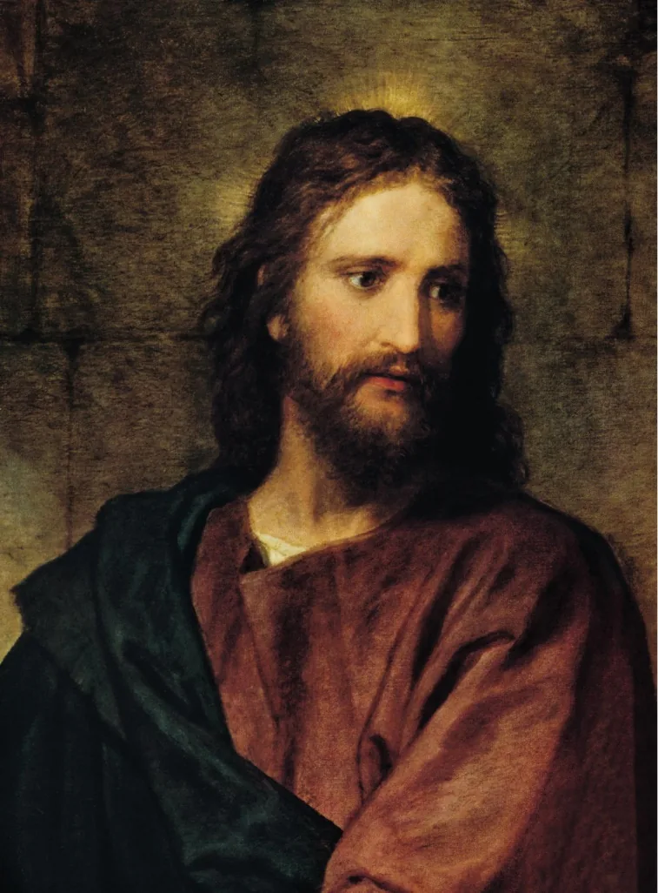
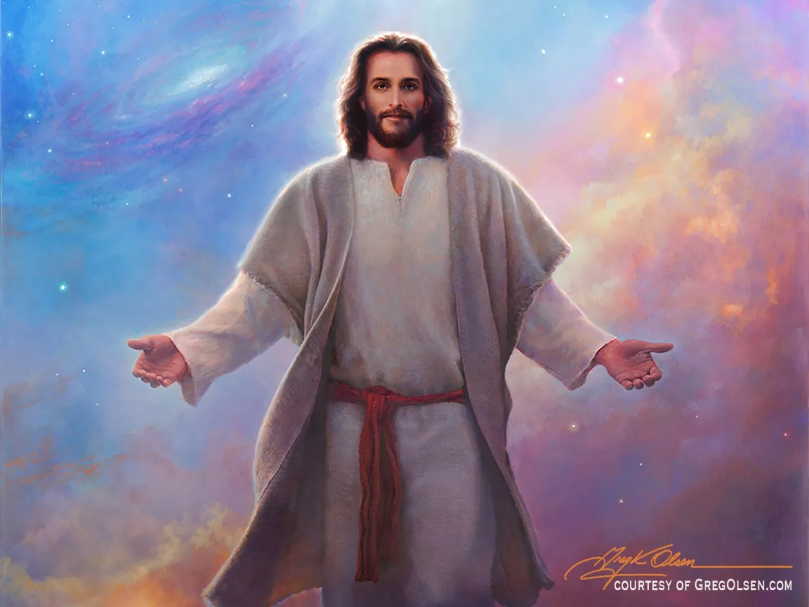
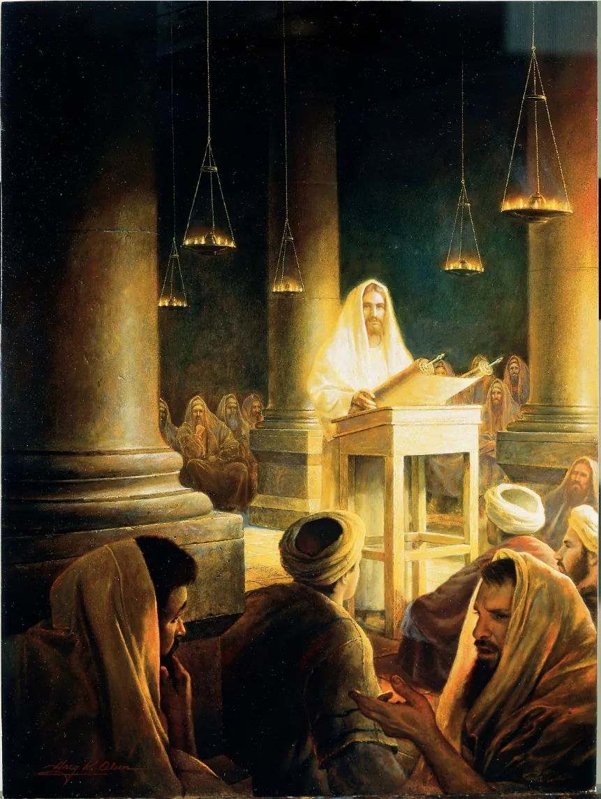
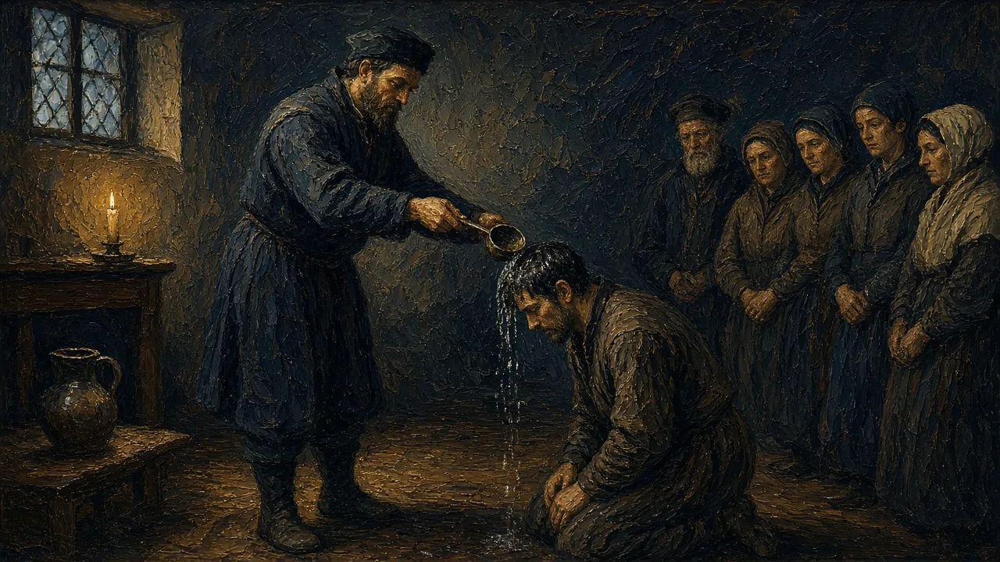
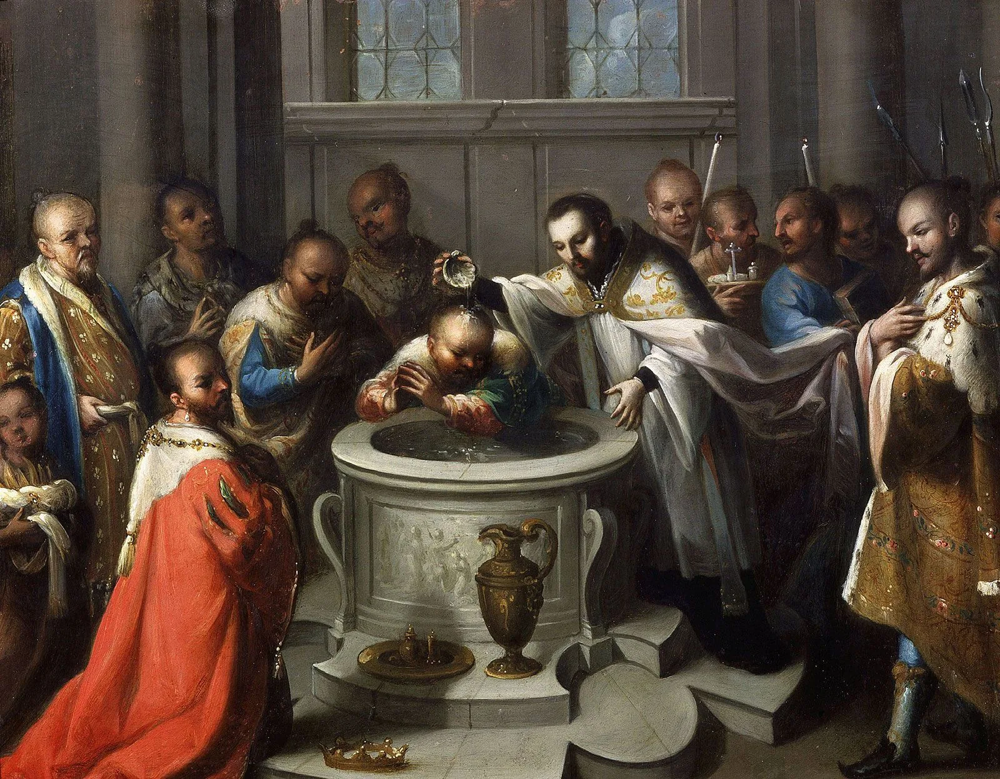

Background image: AI-generated painting of an open illuminated manuscript Gospel book on a carved wooden lectern, its left page decorated with a gold-and-blue ornamental panel above lines of script, lit by a single tall candle against a deep indigo background.
Lecture Roadmap
Three Doctrinal Questions
1 · Who Is Jesus?
Christology connects incarnation, titles of Christ, sin, atonement, and salvation.
2 · How Is God One?
Councils and creeds define orthodoxy, Trinity, and the union of divinity and humanity.
3 · Who Has Authority?
Scripture, tradition, grace, sacraments, and reform generate distinct Christian families.
Guiding question: How do doctrines preserve mystery while also defining communal boundaries?
Section I
The Person & Work of Christ
Why must Jesus be fully human and fully divine—and how does his life, death, and resurrection save?
Background image: AI-generated painting of a nativity scene in a stone stable with a wooden roof: Mary, in a blue mantle, kneels over the newborn in a straw-filled manger while Joseph leans in beside her, an ox and a donkey look on, and a bright star shines over dark hills in the night sky.
Christology
“But who do you say that I am?”
Mark 8:29 (NRSV)
Christology: the branch of Christian theology relating to the person, nature, and role of Jesus Christ.
Divine and Human Nature
Hypostatic Union
Jesus is both fully divine and fully human.
Incarnation
God became human in the person of Jesus Christ.
And the Word became flesh and lived among us, and we have seen his glory, the glory as of a father’s only son, full of grace and truth.
John 1:14 (NRSV)
Doctrine
Mary and the Logic of the Incarnation
Debates about Mary were also debates about who Jesus is
Ephesus · 431
Theotokos, “God-bearer,” protects the claim that the one born of Mary is truly divine.
Chalcedon · 451
Jesus Christ is one person in two natures, fully divine and fully human, without confusion or separation.
Across Traditions
Catholics and Orthodox venerate Mary strongly; Protestants generally honor her biblical role with less devotional emphasis.
The Immaculate Conception concerns Mary’s conception without original sin; it is not another name for Jesus’s virgin conception.
Titles of Christ
Christ (Greek) / Messiah (Hebrew)
The Anointed One.
King of the Jews
A spiritual king, from the royal lineage of David.
Savior
A spiritual savior, not the political liberator many hoped for: “he will save his people from their sins” (Matt. 1:21).
Savior of All
The Gentile mission carries the Jesus movement beyond Jewish communal boundaries.

Devotional portrait of Christ (19th-century style); image from the original deck
Titles of Christ: Son of God
Central to Christianity is the divine sonship of Christ.
The angel said to her, “The Holy Spirit will come upon you, and the power of the Most High will overshadow you; therefore the child to be born will be holy; he will be called Son of God.”
Luke 1:35 (NRSV)

Portrait of Christ in the style of Heinrich Hofmann (19th century); image from the original deck
Titles of Christ: I AM
In John’s Gospel, Jesus speaks of himself in words that echo God’s name revealed to Moses.
Jesus said to them, “Very truly, I tell you, before Abraham was, I am.”
John 8:58 (NRSV)
Christians read this as a claim to be the God of Abraham, Isaac, and Jacob; the crowd’s angry reaction (John 8:59) shows they heard it as one.

Modern devotional painting, “I Am” style (image from the original deck; artist’s courtesy watermark visible)
Why a Savior? Sin and Justification
Sin
Willful disobedience of God’s commandments.
Separation
Sin cuts one off from the presence of God.
Justification
A Savior is needed to justify humanity to God. Justify: to pardon and clear from guilt; to absolve from guilt and merited punishment.
since all have sinned and fall short of the glory of God;
Romans 3:23 (NRSV)
Work of Jesus: Soteriology
In his hometown synagogue, Jesus reads Isaiah: “The Spirit of the Lord is upon me, because he has anointed me to bring good news to the poor…” Then he rolls up the scroll and says:
“Today this scripture has been fulfilled in your hearing.”
Luke 4:21 (NRSV); compare Mark 14:61–62
Soteriology: theology dealing with salvation, especially as effected by Jesus Christ.

Jesus reads in the synagogue at Nazareth (Luke 4); modern devotional painting, image from the original deck
Work of Jesus: Atonement
Atonement: the reconciliation of God and humankind through Jesus Christ
Passion (from Latin passio, “suffering”): the suffering and death of Jesus
Christus Victor: Jesus’ death and resurrection triumphed over sin, death, and the devil
Doctrine
How Does the Cross Save?
Atonement is one doctrine expressed through several overlapping models
Sacrifice / Satisfaction
Christ deals with sin and restores a broken relationship between humanity and God.
Christus Victor
Through death and resurrection, Christ defeats sin, death, and enslaving powers.
Moral Influence
Christ reveals divine love and calls people toward repentance and transformed life.
These are not necessarily competing theories; many Christians combine them.
Work of Jesus: Salvation for All Nations
A Jewish Jesus movement expands into a translocal, predominantly Gentile church
Apostles now commanded to teach Gentiles (Matt. 28:19; compare Matt. 10:5–6)
Atonement applies to all who believe, repent, and are baptized
Go therefore and make disciples of all nations, baptizing them in the name of the Father and of the Son and of the Holy Spirit,
Matthew 28:19 (NRSV)
Symbols of Christianity
Visual forms carry compact statements about Jesus, salvation, and Christian identity
Fish · Ichthus
An early symbol; the Greek letters became an acronym for “Jesus Christ, God’s Son, Savior.”
Cross and Crucifix
The empty cross stresses resurrection; the crucifix keeps Jesus’s suffering and sacrifice visible.
Chi-Rho and the Sign
The Chi-Rho combines the first Greek letters of Christ; tracing the cross makes belief a bodily practice.
Chi-Rho with alpha and omega in an early Christian mosaic; image from the original Lecture 1 deck
Section II
Creeds, Trinity & Orthodoxy
How did debate become doctrine—and doctrine become a boundary of Christian belonging?
Background image: AI-generated painting of a council in a columned hall hung with purple drapery: a young, clean-shaven emperor wearing a gold laurel wreath and purple robes sits on a raised throne and gestures as he speaks, while bearded bishops in dark blue and gold robes and caps sit on either side, some reaching toward him in debate.
Nicaea, 325: Defining Orthodoxy
325: the first ecumenical council meets in Nicaea (the Council of Nicaea)
Ecumenical: intended to represent the church across the Roman world
Proclaims the Nicene Creed (revised in 381); through the Creed, orthodoxy is proclaimed
Creeds define orthodoxy against alternatives increasingly labeled heresy or heterodox
With the establishment of Christianity as Roman state religion, heresy can be viewed as a crime against the state
Note: “heresy” is applied anachronistically to theological theories put forth during this time; it was not at all clear which theories would rise as orthodoxy
Some theories are still accepted by different branches of Christianity
“Heresy” is a label the winning side gives afterward.
Docetism: Jesus Christ, as fully divine, did not have a real or natural body during his life on earth, but only an apparent one
Associated with Gnosticism, which held that matter was evil and spirit good, and claimed that salvation was attained only through esoteric knowledge (gnosis)
Christ, although of miraculous birth, was a mere man until adopted by God.
Patripassionist (“the Father suffers”)
God the Father came to earth and suffered and died under the appearance of the Son. The Trinity is three manifestations of the single divine being.
Nicene Creed: Reading for the Arguments
Read the Creed; identify phrases that are in direct reaction to the “heresies” just discussed.
“begotten, not made, of one Being with the Father”
is in reaction to Arianism.
“was incarnate of the Holy Spirit and the Virgin Mary and became truly human”
is in reaction to Docetism.
Creeds, Trinity & Orthodoxy
Common Teachings
After the councils: what do most Christians share?
Background image: AI-generated painting of a candlelit domed baptistery with a gold mosaic ceiling and an arcade of round arches: men in long white robes stand around a sunken octagonal pool of water while a bearded bishop in a gold-embroidered blue vestment and a gold mitre raises his hand toward them.
Niceno-Constantinopolitan Creed
Most influential of all Christian statements of belief
“accepted as authoritative by the Roman Catholic, Eastern Orthodox, Anglican, and major Protestant churches”
Gives authoritative creedal language to Trinitarian doctrine: the Father and Son are consubstantial
Fully developed in the Athanasian Creed
Doctrine of the Trinity
“Neither the word ‘Trinity’ nor the explicit doctrine appears in the New Testament”
Early texts describe Father, Son, and Spirit in diverse ways; later interpretations included Arian and Adoptionist views
Doctrine develops while keeping Jewish monotheism and affirming the divinity of Son and Spirit; some early texts present Jesus as subordinate to the Father
Formulated in the 4th–5th centuries and codified in the Creeds: monotheism kept by stating three persons of the same substance
Uses Greek philosophical terms to clarify claims rooted in scripture and worship
The Holy Trinity: Father and Son
God the Father
All powerful in heaven and on earth; there is nothing outside his power. A living being, not a force or a cosmic principle.
God the Son
Through him heaven and earth were created. Jesus is the crucified and exalted Lord, and the Son of God. Interpretations of Jesus: the Gospels of Matthew, Mark, Luke, and John.
The Holy Trinity: Holy Spirit
Called Lord, the term also used for the Father and the Son
The foundational view of the Spirit is sketched in a section of the Nicene Creed:
We believe in the Holy Spirit, the Lord, the giver of life, who proceeds from the Father [and the Son]. With the Father and the Son he is worshiped and glorified. He has spoken through the Prophets.
Nicene Creed, ecumenical English text (BCP 1979); [and the Son] = the western filioque
Powerful, uncontrollable, and unpredictable
Pause & Reflect
Reading Guide · Review Question 7 (God the Son)
What role does the Nicene Creed play in defining the nature of Jesus Christ?
Look back: Nicene Creed: Reading for the Arguments · Niceno-Constantinopolitan Creed · The Holy Trinity: Father and Son
When Christians disagree about salvation, who has authority to interpret scripture and reform the church?
Background image: AI-generated painting of a candlelit sixteenth-century printing workshop: a bearded printer in a leather apron studies a freshly printed sheet beside a large wooden screw press, a second worker picks letters from a wooden type case, a third works at a back bench, and printed sheets hang drying from cords overhead.
Sacred Writings
The New Testament
Twenty-seven writings from the first generations of the Christian movement
4 Gospels
Matthew, Mark, Luke, and John interpret the life, death, and resurrection of Jesus.
Acts
A narrative of the Spirit-guided expansion from Jerusalem toward Rome.
21 Letters
Pauline and general epistles address belief, worship, ethics, and community conflict.
The canon emerged gradually as communities tested texts by apostolic connection, widespread use, and consistency with accepted faith.
Sacred Writings
Who Interprets Scripture?
Christians share a Bible but differ over the location of interpretive authority
Catholic
Scripture and apostolic Tradition are interpreted within the Church’s teaching office.
Orthodox
Scripture is read within Holy Tradition, especially councils, liturgy, and the Church Fathers.
Protestant
Sola scriptura makes Scripture the final norm, while traditions still guide interpretation.
No reading is context-free: translation, worship, community, and prior assumptions shape interpretation.
A New Theology: Grace, Faith, Scripture
Luther develops a new understanding of salvation, or reconciliation with God. Catholic tradition teaches that grace initiates and enables human response and transformation; Luther stresses justification by grace through faith, apart from works as merit:
Sola gratia
Salvation is, fully and completely, a work of divine grace.
Sola fide
God’s pardon for guilty sinners is granted to and received through faith alone, excluding all works.
Sola scriptura
Luther claims authority through an appeal to scripture alone.
A New Theology: Priests and Sacraments
Catholic teaching presents sacraments as means of grace, ordinarily entrusted to ordained ministry
Luther’s sola gratia / sola fide is a direct attack on the magisterium
All baptized Christians share a “universal priesthood”; ordained ministry remains, but is not a separate spiritual class
Sacraments limited to the two found in the Bible: Baptism and Eucharist
×
Magisterium
The teaching authority of the Roman Catholic Church, especially as exercised by bishops or the Pope.
The Lutheran Church
Luther excommunicated in 1521; excommunication and political conflict produce separate evangelical church institutions
Luther and his movement were promoted by rulers of several German states
Translated the Bible into German, still used today
Gave community singing a renewed role
Composed hymns and a hymn book
Example: A Mighty Fortress Is Our God
Pause & Reflect
Reading Guide · Review Question 4 (Reformation in the Western Church, 1500–1600)
What were the main features of Martin Luther’s Magisterial Reformation?
Look back: A New Theology: Grace, Faith, Scripture · A New Theology: Priests and Sacraments · The Lutheran Church
Multiple reformers followed Luther: John Calvin, Huldrych Zwingli
Gives rise to multiple denominations: Calvinism, Anglican (Church of England), Anabaptists
“33,000 denominations” is a disputed classification, not a count of Protestant denominations.
Reformation
Reformed and Anglican Christianity
The Reformation quickly became several reformations
Reformed · Zwingli and Calvin
God’s sovereignty and disciplined communal life; simplified worship centered on Scripture and preaching; spread through Switzerland, France, Scotland, and the Netherlands.
Anglican · Church of England
Political break under Henry VIII; Protestant doctrine develops within episcopal and liturgical continuity; a contested “middle way” between Protestant and Catholic inheritances.
The movements differed over worship, authority, church government, and Christ’s presence in Communion.
The Radical Reformation
Anabaptists argued that reform must reach church membership, power, and everyday life.
Believer’s baptism
Baptism follows a conscious profession of faith, rather than occurring in infancy.
Voluntary church
Membership should not be automatic through birth or citizenship.
Separation from coercive power
Many rejected state control of religion and the use of force in matters of faith.
Discipleship
Pacifism, mutual aid, simplicity, and strict moral accountability characterized important branches.

AI-generated image: a secret adult baptism by pouring, in a candlelit house, as Anabaptists practiced it.
Mennonites, Amish, and related traditions preserve parts of the Anabaptist inheritance.
Pause & Reflect
Reading Guide · Review Question 5 (Reformation in the Western Church, 1500–1600)
Why was the Radical Reformation important in the development of Protestantism?
Look back: The Floodgates Open · The Radical Reformation
Efforts by the Catholic Church against the Protestant Reformation and toward internal renewal
Pope Paul III convenes the Council of Trent in 1545
Issues the formal Catholic reply to the doctrinal challenges of the Protestant Reformation
Key Doctrinal Clarifications
Liturgy and sacraments: transubstantiation affirmed.
Church Discipline and Reform
Index of Forbidden Books; new religious orders, significantly the Jesuits.
Society of Jesus (Jesuits)
Founded in 1534 by St. Ignatius of Loyola
Swore loyalty to the Pope; dedicated to reconstructing church life and teaching
Highly educated; prominent agents of Catholic renewal, scholarship, and education
Active in missionary efforts throughout the world, especially South America and Asia: St. Francis Xavier in Asia

St. Francis Xavier baptizing converts (painting); image from the original deck
Looking Back: How the Doctrines Interlock
Jesus Christ→Salvation & Grace→Creed, Scripture & Tradition→Christian Communities
When Christians disagree, which authority decides what counts as faithful interpretation?
Beyond the lecture
Beyond the Lecture
Optional Independent Study
Two optional mini-lectures. From Persecution to Nicaea tells the story behind slides P–X: how a persecuted movement ended up writing a creed with an emperor in the room. The Rabbit Hole continues the story into the modern world: Vatican II, evangelicalism, Pentecostalism, and the shift of Christianity to the Global South (Reading Guide Questions 6, 11, and 12).